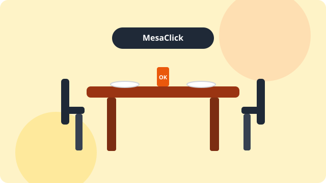

Reserva tu mesa en segundos
MesaClick es una plataforma pensada para agilizar la reserva de mesas en restaurantes, evitando filas y mejorando la organización de cada servicio.
Ir al formulario de reserva
¿Qué ofrece MesaClick?
- Selección rápida de fecha, horario y cantidad de personas.
- Elección de zona preferida: salón interior, terraza o barra.
- Registro claro de solicitudes especiales para cada reserva.